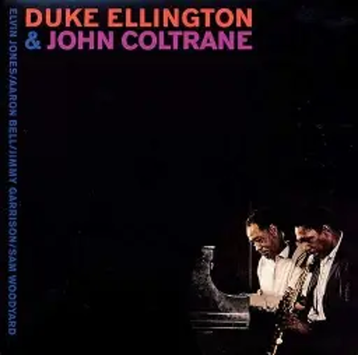

KJ Jazz
Week 1 (4/19 - 4/26)

Hello and welcome to the first KJ Jazz album of the week! We are starting this brand new series off strong with the self-titled collaboration album, “Duke Ellington and John Coltrane.”
Deep Dive
- At some points, I began to feel like this sounded like many other jazz albums I have heard, but what I really see is that these men are expressing the feelings and problems they had at the time, and our problems are not entirely unique or new. We are battling old problems and not battling them alone. This era is just expressing those.
- With one of the strongest starts to a jazz album of all time, the track “In A Sentimental Mood” sets the tone for the whole album, creating a soft and compelling feeling, while leaving space for both Coltrane and Ellington to speak to their individual strengths.
- The album is scattered with Coltrane’s fluttery saxophone licks, that feel light and energetic, that carry you through the album. Coltrane also does a wonderful job balancing these with his solos, which often feel like an expression of raw, unfiltered emotions coming across
Sneaky Picks -
A new section highlighting the tracks we loved, ones that might fly under the radar but absolutely deserve your attention.
- J’s pick: “The feeling of jazz.” Each lick ended so sweetly and really leaves a beautiful picture of what jazz is.
- K’s pick: “My Little Brown Book.” Following several higher energy tracks, this song gives us time to slow down and reflect, while encapsulating the feeling of smooth jazz perfectly